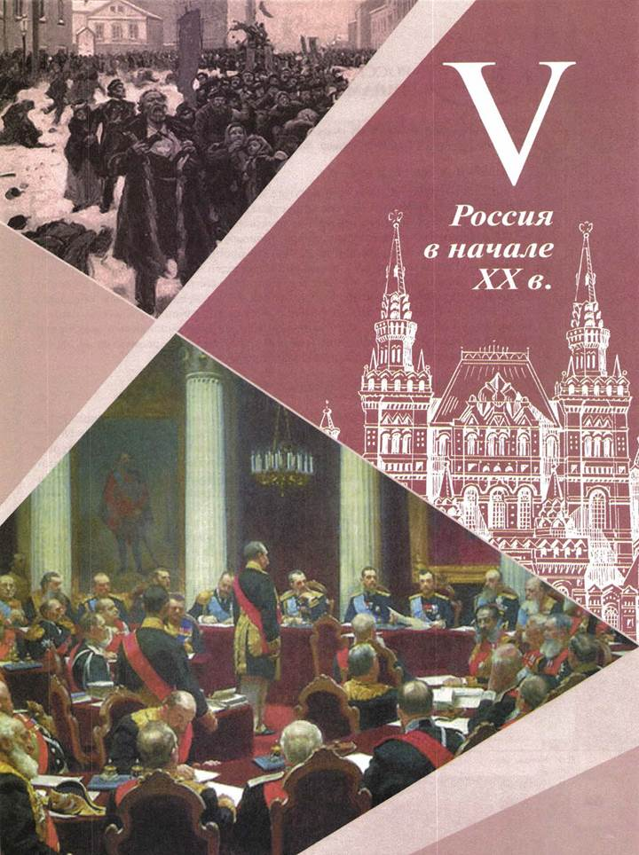
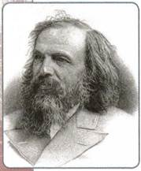
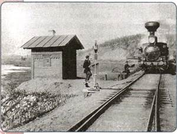
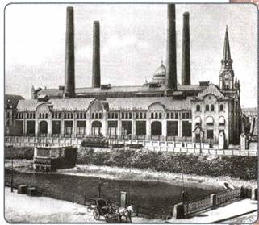
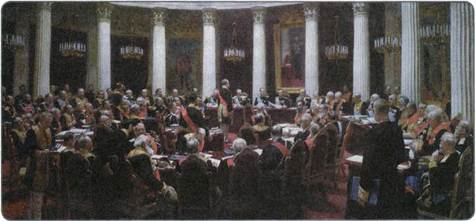

Почему рубеж XIX—XX вв. считается началом новейшего периода истории? Какое место занимала Россия в начале XX в.?
1. Мир к началу XX в.
На рубеже XIX—XX вв. мир вступил в переходный период своей истории. Завершилась в основных чертах индустриализация на Западе, обозначавшая становление буржуазного общества в странах Западной Европы и в США.
Буржуазия стала не только главной экономической, но и политической силой. Век буржуазных революций на Западе прошёл. Основным направлением политического развития стал реформизм (убеждённость в том, что перемен к лучшему можно добиться не революционным путём, а с помощью реформ). Политическая борьба партий и социальных групп велась главным образом в ходе парламентских выборов и в стенах самих парламентов. Свобода слова и собраний привела к тому, что стали создаваться многочисленные демократические движения и организации (рабочие, антивоенные, религиозные, феминистские). Большое значение приобрели профсоюзы.
Из курса Новой истории вспомните, что такое профсоюзы.

Д. И. Менделеев
Серьёзные изменения произошли в экономическом развитии ведущих стран мира. Изобретения в области производства высококачественной стали 1860— 1870-х гг. дали огромный толчок развитию промышленности, началось бурное строительство железных дорог, появились новые технологии и виды техники. Этот процесс стали называть технологической революцией (или второй промышленной революцией). Он был теснейшим образом связан с научной революцией.
Научные открытия изменили картину мира. Немецкий физик Г. Герц в 1889 г. доказал существование электромагнитных волн, В. Рентген в 1895 г. обнаружил лучи, которые представляли собой коротковолновое электромагнитное излучение (позднее они получили название рентгеновских). Изучение их природы привело англичанина Дж. Дж. Томсона к открытию первой элементарной частицы — электрона. Французский физик А. Беккерель в 1896 г. открыл эффект радиоактивности. Э. Резерфорд показал неоднородность радиоактивного излучения, состоявшего из альфа-, бета-, гамма-лучей, в 1911 г. он построил планетарную модель атома.
К великим открытиям конца XIX в. также следует отнести работы русских учёных: А. Г. Столетов открыл первый закон фотоэффекта, П. Н. Лебедев достиг успехов в изучении электромагнитной природы света. Событиями мирового значения стали открытие периодической системы элементов Д. И. Менделеевым, начало разработки теории относительности А. Эйнштейном.
Рубеж XIX—XX вв. был отмечен также новым демографическим скачком. Население Земли увеличилось с 1850 по 1900 г. с 1,26 до 1,65 млрд человек, т. е. на треть. Особенно быстро оно росло в европейских странах. За период с 1870 по 1914 г. население Европы увеличилось с 300 до 450 млн человек, т. е. в полтора раза. Рост населения опережал численность рабочих мест. Это вызывало усиление миграции населения. За 1870—1914 гг. из Европы в страны Северной Америки и другие регионы Земли выехало 26 млн человек (в том числе в США и Канаду 13 млн).
Миграция населения и процессы индустриализации вызвали усиление процессов урбанизации. Если в 1880 г. в Европе насчитывалось 8 городов с численностью населения более 1,5 млн человек, то в 1914 г. — уже 29.
Обнаружилась неравномерность развития экономики различных стран. Мировыми экономическими лидерами выступали США, Англия, Германия, Франция, Бельгия, имевшие самые современные технологии и значительные объёмы производства. Это были страны первого эшелона мирового экономического развития. За ними следовали страны второго эшелона — Россия, Швеция, Италия, Япония, Австро-Венгрия, Канада. В остальных государствах (странах Азии, Латинской Америки, Африки) процессы индустриализации ещё не начались. Такое положение обусловило догоняющий характер развития стран второго и третьего эшелонов.
Эта неравномерность приводила к нарастанию противоречий не только между первой, второй и третьей группами стран. Она порождала антагонизм и в каждой из этих групп. К примеру, викторианская Англия была менее восприимчива к новациям, чем стремительно обновляющаяся Германия. А США стремились не просто упрочить своё положение в мире, но и доминировать в нём.
Выросшие масштабы экономического потенциала развитых стран давали возможность использовать его не только для решения насущных социальных задач, но и для подготовки к ведению масштабных войн.
Революционные перемены произошли и в развитии военной техники. Появились такие современные виды вооружений и военного оборудования, как танки, аэропланы, подводные лодки, пулемёты, химические отравляющие вещества, а также колючая проволока. Подобные новшества были способны не только изменить сам характер войны, но и привести к невиданным ранее масштабам людских потерь как среди военнослужащих, так и среди мирного населения.
2. Территория и население Российской империи в начале XX в.
В XX столетие Россия вступала в зените своего территориального могущества. Длина границ Российской империи была равна почти двум экваторам и составляла почти 70 тыс. км. Это была величайшая евразийская империя. Хотя в международной политике Россия считалась страной европейской, две трети её пространства располагались на Азиатском континенте, что определяло многое в проведении внутренней и внешней политики. Но основная доля населения (82 %) жила в европейской части страны.
Население Российской империи к концу XIX в. составляло 125,7 млн человек. Из них лишь немногие (13,4%) жили в городах. Основная же часть населения проживала в сельской местности. Низкой была и плотность населения. В среднем на одну квадратную версту приходилось лишь 6,7 человека (в европейской части России — 22), в то время как во Франции этот показатель составлял 71, в Германии — 126, в Англии — 186.

Железная дорога в конце XIX в.
Численность населения России во второй половине XIX в. росла быстрыми темпами. Всего за 40 лет (с 1858 по 1897 г.) население страны увеличилось с 68 до 116 млн человек, а за следующие неполные 20 лет (с 1895 по 1914 г.) — ещё почти на 50 млн человек. Эти показатели были впервые в истории страны достигнуты не за счёт расширения её территории, а благодаря высокой рождаемости (она составляла в среднем 48 человек на 1 тысячу населения в год).
Падение крепостного права, индустриальный рывок последней четверти XIX в. обусловили быстрый рост городов и городского населения. Удельный вес горожан в общей массе населения увеличился с 9,2 до 14,3 % (с 1858 по 1914 г.). Число городов выросло со 100 в начале XIX в. до почти 1000 в конце столетия. Кроме них, возникли и стремительно развивались посёлки городского типа, население которых составляло порой десятки тысяч человек. В начале XX в. таких населённых пунктов было 1600. За первое десятилетие XX в. городское население страны увеличилось почти на 10 млн человек.
В начале XX в. появились и города-миллионеры: Санкт-Петербург (2,3 млн) и Москва (1,6 млн). Увеличивалась миграция населения из сёл в города. Так, в Москву из сельской местности лишь в первое десятилетие XX в. прибыло 700 тыс. человек, а в Петербург — почти 1 млн человек. Аналогичные явления, хотя и в меньших масштабах, имели место и в других крупных городах России.
Вместе с тем расселение жителей было по-прежнему неравномерным. Плотность населения в северных и восточных районах страны оставалась по-прежнему крайне низкой. Неурожай и голод начала 1890-х гг. вызвали потребность в государственном регулировании перемещения населения. В результате принятых мер увеличилась численность населения Новороссии, Северного Кавказа, отчасти Сибири, Бессарабии. В этих районах прирост населения в последней трети XX в. составил от 250 до 700 %. В итоге доля населения европейской части России сократилась с 84 до 74 %, в то время как доля жителей Новороссии составила теперь не 5,3, а 8,1%, Сибири — не 5, а 7 %, Средней Азии — не 4,2, а 6 %.
Российская империя в начале XX в. оставалась многонациональной страной, в которой жили представители около 140 народов. В большинстве своём это были славяне — русские, украинцы, белорусы, поляки (всего около 92 млн человек). Удельный вес русских жителей страны составлял в этот период 48%. В Европейской России наиболее многочисленными после славян были народы тюркской группы — татары, башкиры и чуваши.
Религиозный состав населения был неоднороден. Россия была крупнейшей христианской державой — 80 % её жителей были представителями разных ветвей христианства. Но ведущее место традиционно занимали православные. Согласно проведённой в 1897 г. переписи населения Российской империи крупнейшие конфессии составили православные — 69,3%, магометане (мусульмане) — 11,1 %, римо-католики — 9,1 % и иудеи — 4,2%.
Почти две трети населения страны составляло работоспособное население в возрасте от 14 до 60 лет. Это создавало значительные возможности для экономического процветания России.
3. Особенности российской модернизации
В начале XX в. в России продолжался процесс модернизации.
Вспомните, что такое модернизация. Как связаны между собой модернизация и развитие индустриального общества?

Электростанция в Москве
Модернизация охватила все ведущие страны мира, но в России этот процесс имел свои особенности. Прежде всего они были вызваны догоняющим характером экономического развития России по сравнению с ведущими державами. Модернизация экономики и построение индустриального общества проходили по инициативе и под контролем государства. Этот процесс потребовал напряжения всех сил общества. В начале XX в. модернизация охватила в основном те отрасли экономики, от которых зависело военное и политическое могущество страны. Процесс модернизации затрудняли особенности политических и социальных отношений, сложившихся в России к началу XX в.
4. Политический строй. Государственные символы
Политический строй Российской империи к началу XX в. существенных изменений не претерпел.
Российская империя оставалась самодержавной монархией. В руках императора сосредоточивалась вся полнота государственной власти — законодательной, исполнительной, отчасти судебной.
Совещательным органом при императоре являлся Государственный совет. Он имел право «подавать императору мнения по вопросам законодательства». Но император вовсе не был обязан прислушиваться к этим мнениям. Монарх руководил страной через Комитет министров, являвшийся высшим исполнительным органом империи. Министры были ответственны только перед императором. Император был главой не только государства, но и Русской православной церкви, официально признанной «первенствующей и господствующей» в стране. Управление православной церковью царь осуществлял через Синод. К высшим государственным учреждениям относился и Сенат, который следил за законностью действий высших чиновников и обладал правом обнародовать законы.

Торжественное заседание Государственного совета 7 мая 1901 г. Художник И. Е. Репин
Гербом Российской империи был двуглавый орёл с царскими регалиями — коронами, скипетром и державой. Государственный флаг представлял собой полотнище с белой, синей и красной горизонтальными полосами. Гимн начинался словами: «Боже, Царя храни...»
5. Социальная структура
Модернизация экономики в начале XX в. сопровождалась важными изменениями в социальной структуре общества.
По закону всё население России традиционно делилось на сословия — потомственные и личные дворяне, почётные граждане, купцы 1, 2, 3-й гильдий, мещане, крестьяне, казаки и др.
Вспомните, какой признак является главным при выделении сословий — экономический или юридический (правовой).
Модернизация разрушала сословные перегородки. Традиционное деление на сословия дополнялось и вытеснялось делением на классы.
Численность крупной буржуазии (т. е. имеющей доходы свыше 10 тыс. р. в год) была незначительна. В начале века она составляла примерно 25 тыс. человек (с членами семьи 125 тыс.), в 1910 г. — около 30 тыс. (с членами семьи 200 тыс.). Российская буржуазия не имела прочной опоры в обществе, так как практически отсутствовали средние слои населения, т. е. мелкие собственники. Она была тесно связана с правительством, не имела политических прав. На фабриках и заводах существовала беспощадная эксплуатация наёмных рабочих.
Многие представители российской буржуазии были образованными людьми, занимались благотворительностью, меценатской и просветительской деятельностью. Текстильный фабрикант П. М. Третьяков передал в дар Москве уникальную коллекцию русской национальной живописи и великолепное здание, в котором она размещалась. Фабрикант С. Т. Морозов был одним из учредителей Московского художественного театра.
К началу XX в. в России было примерно 13 млн наёмных рабочих, из них 2,8 млн — потомственные рабочие, остальные — рабочие в первом поколении, как правило, выходцы из деревни. По закону, принятому в 1897 г., рабочий день составлял 11,5 ч. Заработки едва позволяли сводить концы с концами. Рабочий-углекоп в Донбассе в 1902 г. мог заработать не более 24 р. в месяц, а минимальные расходы, не считая плату за жильё, семьи из 4 человек составляли 30 р. Семьи многих рабочих жили впроголодь. На предприятиях действовала драконовская система штрафов — они забирали до 30 % зарплаты. Как правило, рабочие ютились в построенных при фабриках казармах, всю мебель в которых составляли двухэтажные нары и длинные обеденные столы и скамейки. У рабочих не было элементарных гражданских прав, и это особенно их возмущало. Они не могли создавать организации даже для защиты своих экономических интересов. За участие в стачках полагалось тюремное заключение от 2 до 8 месяцев. Бесправие усугублялось полицейским произволом.
Высшей социальной группой в России являлось поместное дворянство. Помещики владели огромной земельной собственностью, но и здесь происходили перемены. Землевладение перестало быть исключительно дворянским. В 1905 г. более трети крупных поместий принадлежало недворянам. Лишь немногие дворяне-помещики сумели перевести свои хозяйства на капиталистические рельсы, преобразовать их в образцовые имения с применением сельскохозяйственных машин и наёмного труда. В 1905 г. таких имений было не более 3 %. Огромная масса помещиков так и не сумела приспособиться к новым условиям. Их расходы, как правило, превышали доходы. Земли закладывались и перезакладывались, продавались.
В крестьянской среде шло имущественное расслоение. В деревне появились люди, главным источником богатства которых была эксплуатация наёмного труда, торговля, ростовщичество. Именно их, а не всех зажиточных хозяев называли кулаками. К началу XX в. кулаки составляли 2—3 % крестьянского населения. К ним примыкали примерно 15 % зажиточных крестьян. Главным мерилом зажиточности было наличие определённого количества скота — более четырёх лошадей, столько же коров. На другом полюсе деревни — безлошадные хозяйства (примерно 25%). Крайним проявлением бедности было отсутствие коровы — таких хозяйств насчитывалось до 10 %. Крестьянство задыхалось от острого малоземелья. Земли не хватало, многие крестьяне были вынуждены арендовать землю у помещиков.
За землю расплачивались деньгами или работой в пользу помещика (отработки). Крестьяне продолжали платить государству деньги за своё освобождение от крепостной зависимости. Они оставались самой бесправной категорией населения. Сохранялись сословные суды и телесные наказания. Деревенская жизнь находилась под контролем земских начальников.
Важную роль в общественной жизни России играла интеллигенция. К началу XX в. в России 2,7 % населения занималось преимущественно умственным трудом: учёные, преподаватели, врачи, лица свободных профессий (адвокаты, журналисты, писатели, артисты и др.). К 1917 г. их количество удвоилось и составило 1,5 млн человек.
6. Образ жизни
Свыше 80 % населения России проживало в сельской местности. В то же время быстро росло городское население. При этом треть горожан сосредоточивалась в крупных городах.
Образ жизни городского населения Европейской России, Финляндии, Польши, прибалтийских, юго-западных губерний всё более соответствовал уровню индустриальной эпохи. Широко развернулось многоэтажное жилищное строительство. Электричество, лифт, водопровод и телефон становились обыденным явлением в домах зажиточных горожан. По улицам рядом с извозчиками быстро бежали трамваи, перестали быть редкостью автомобили.
Сельские жители страны придерживались традиционного уклада жизни, вековых правил и норм поведения, хотя и в деревню проникали городские веяния. В то же время многие народы Российской империи практически не были затронуты влиянием цивилизации. Их жизнь, быт, культура и верования находились на уровне родо-племенных отношений.
По уровню грамотности населения Россия занимала одно из самых последних мест в Европе. В 1897 г. грамотных было 21,2 %: 29,3 % — среди мужчин, 13,1 % — среди женщин. Грамотное население жило преимущественно в крупных городах. Высшее образование имел один человек из ста, среднее — четыре человека. Только среди дворянства и духовенства неграмотных практически не было. На нужды просвещения государство тратило в год 43 к. в расчёте на душу населения, в то время как Англия и Германия — около 4 р., США — 7 р.
ПОДВЕДЁМ ИТОГИ
Таким образом, на рубеже веков мир вступил в новый период своей истории, связанный с завершением формирования индустриального общества. Российская империя в начале XX в. представляла собой огромную по территории многонациональную державу, вставшую на путь индустриальной модернизации, но сохранившую традиционные политические устои.
Вопросы и задания для работы с текстом параграфа
1. Какая взаимосвязь существовала между научной и промышленной революциями? Назовите важнейшие научные открытия периода рубежа XIX—XX вв.
2. Какой критерий используется для определения стран второго и третьего эшелонов? К какому эшелону на рубеже XIX—XX вв. относилась Россия? 3. Как промышленный прогресс влиял на развитие вооружений? Приведите примеры из текста параграфа. 4. Какие территории входили в состав Российской империи в начале XX в.? 5. Назовите религии, которые исповедовали жители России на рубеже XIX—XX вв. 6. Что такое модернизация? Каковы были особенности российской модернизации экономики? Какие регионы Российской империи на рубеже XIX—XX вв. развивались наиболее быстрыми темпами? 7. Перечислите изменения, происходившие в социальной структуре российского общества.
Работаем с картой
1. Покажите на карте территорию Российской империи в начале XX в., её столицу, крупнейшие города. 2. Покажите регионы, где наблюдался наибольший прирост населения.
Изучаем документ
ИЗ «ОСНОВНЫХ ЗАКОНОВ РОССИЙСКОЙ ИМПЕРИИ»
Император всероссийский есть монарх самодержавный и неограниченный. Повиноваться верховной его власти не токмо за страх, но и за совесть сам Бог повелевает. <...> Никакое место или правительство в государстве не может само собой установить нового закона, и никакой закон не может иметь своего совершения без утверждения самодержавной власти.
1. Как определяли «Основные законы...» место императора в политической жизни России? 2. Объясните термин «монарх самодержавный и неограниченный».
Думаем, сравниваем, размышляем
1. Какие взаимосвязи существовали между процессами политической, социальной и экономической модернизации? 2. Какие новые задачи встали перед Россией в начале XX в.? Как они связаны с модернизацией? 3. Какие предметы быта XIX — начала XX в. сохранились в вашей семье или у знакомых? Если такие предметы есть, кратко расскажите о них или сделайте фотоотчёт. 4. Какой была социальная структура общества России к началу XX в.? 5. Используя Интернет, соберите отзывы, оставленные о России конца XIX — начала XX в. иностранцами. На основании собранных материалов напишите в тетради эссе на тему «Россия конца XIX — начала XX в. глазами иностранцев».